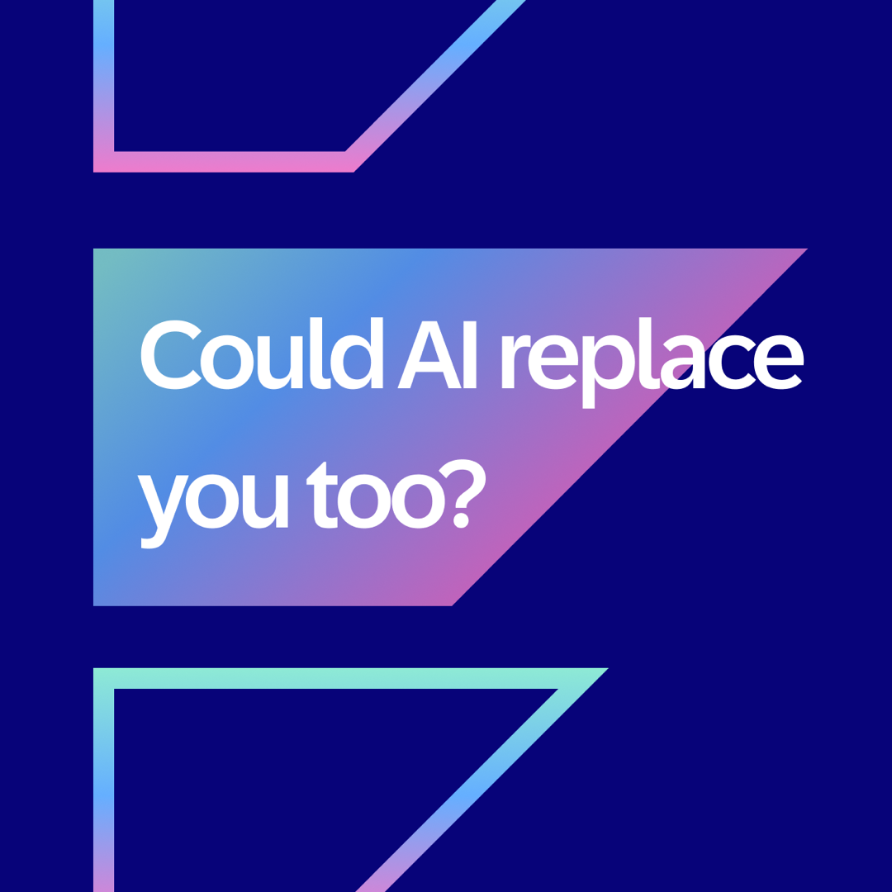
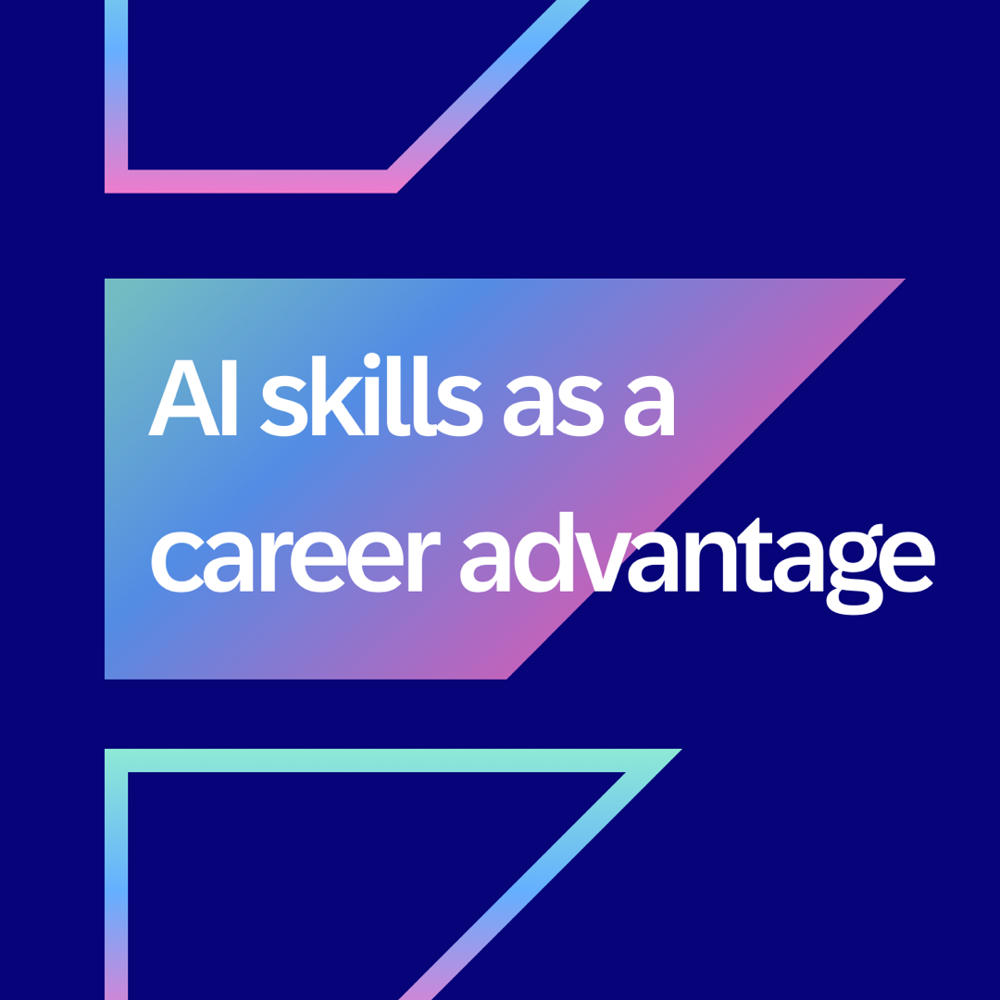
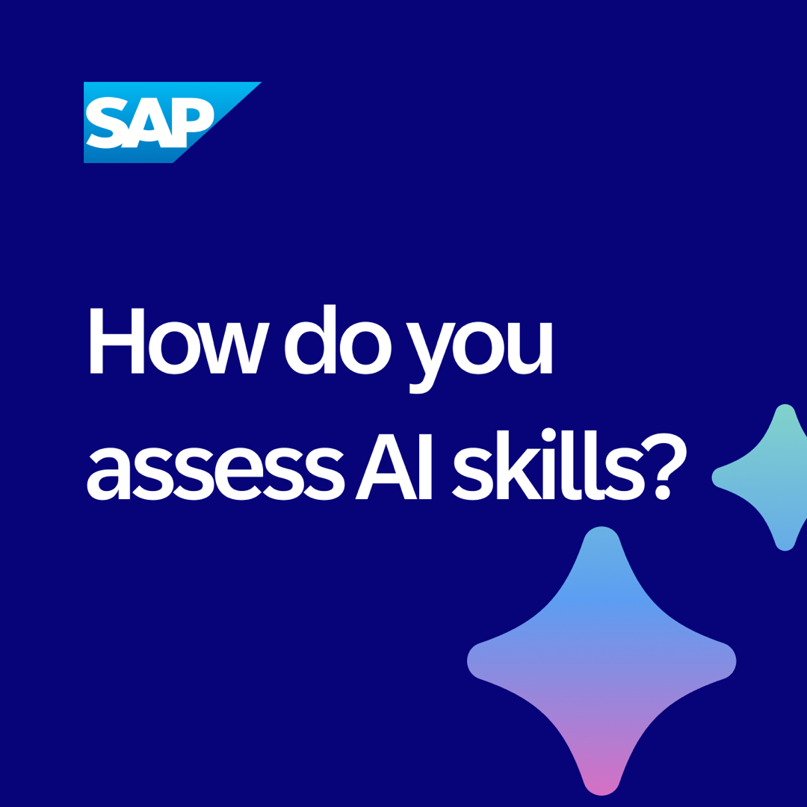
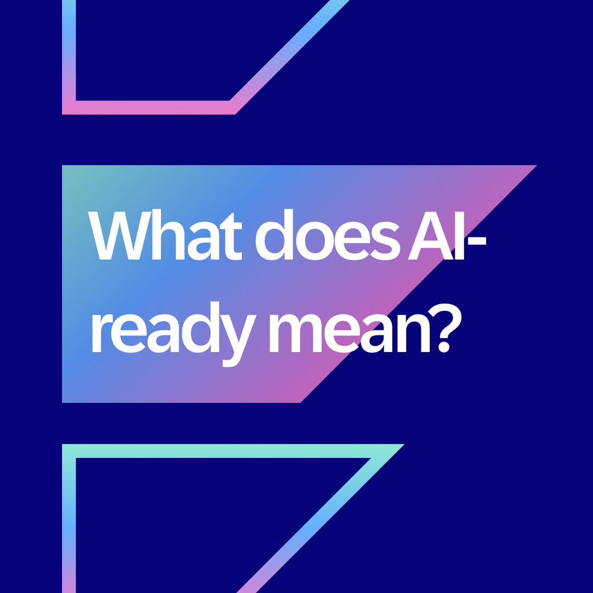
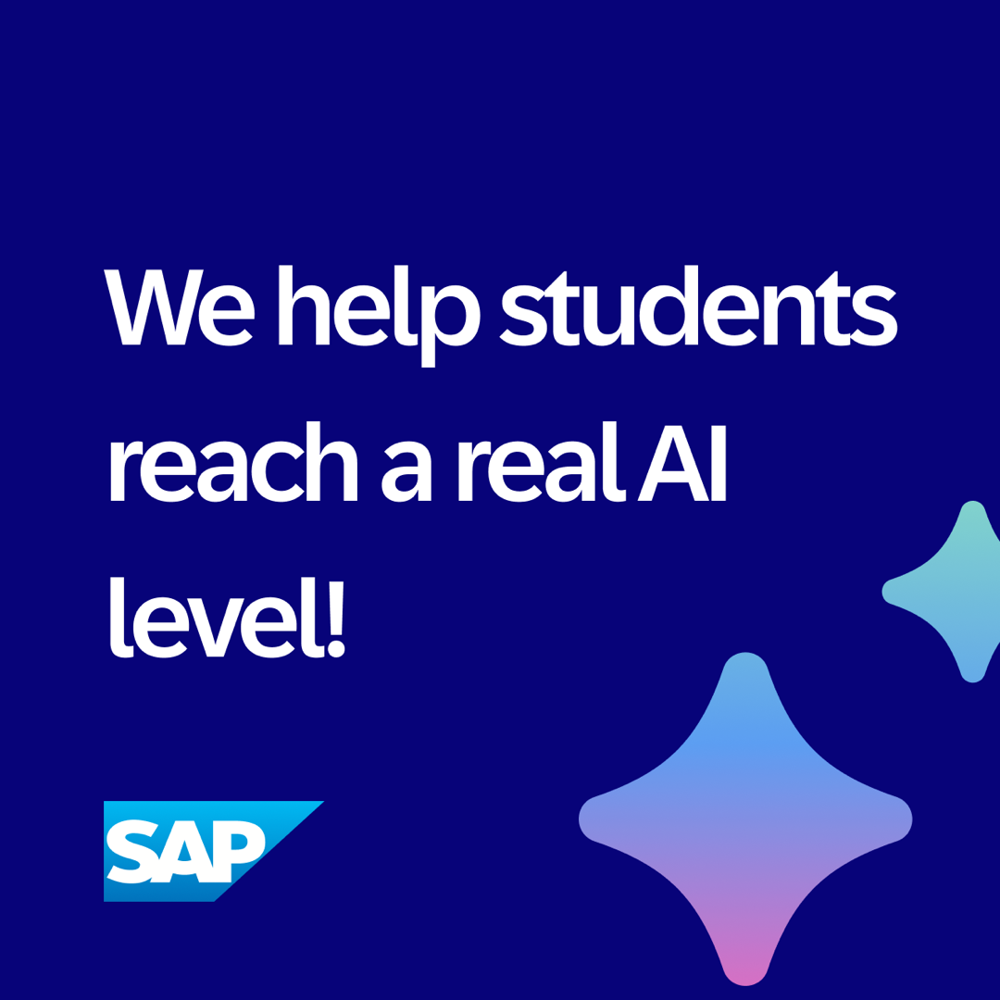
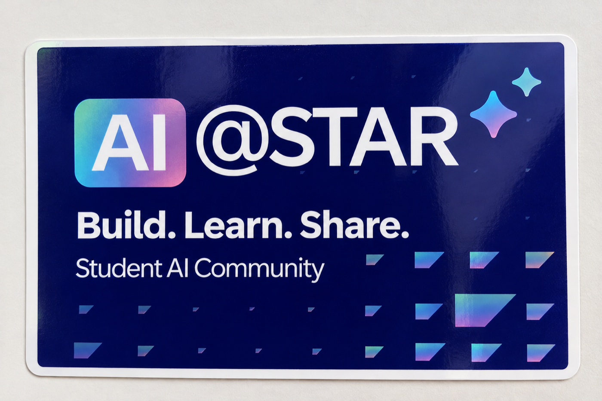

A student-led AI community at SAP — built to give STAR students real AI skills. As Design Lead, I created the brand identity, visual language and social media campaign that gave AI@STAR its voice.
Build. Learn. Share. ← Back to Work at SAPAI@STAR is a student-led community at SAP bringing together STAR students around a shared topic: Artificial Intelligence. The project was initiated by other STAR students — my role was to give it a face.
As Design Lead, I developed the complete brand identity from scratch: logo, color world, typography, visual language and the social media campaign that makes AI@STAR recognizable and worth following.

A series of LinkedIn posts built around the questions every student is already asking — designed in the AI@STAR brand world of deep navy, holographic gradients and sharp, confident type.







Beyond the screen, AI@STAR lives as a holographic sticker — a small, tangible badge of belonging to the Student AI Community. The gradient catches the light just like the digital brand, carrying “Build. Learn. Share.” out into the real world.
It's a reminder that AI@STAR is not a one-off campaign, but an identity students carry with them — on laptops, in hallways and across the SAP community.

What I take away from this project.
AI@STAR gave me the chance to build a brand identity entirely from scratch — developing a visual world, a campaign and a consistent presence across every touchpoint. I learned how to give a complex, fast-moving topic a clear, confident voice that feels credible and not just trendy. Every design decision had to work both independently and as part of a larger whole.